Teaching · course material, Mines Paris – PSL
Solar forecasting basics: a worked example on ten years of Ajaccio data
The course and the stories on www.cyrilvoyant.com
- The course, slide by slide: all 59 slides of the UE14 course with their text, outline and keyboard navigation; PowerPoint and PDF downloads.
- Le cours en français: the same course in French, slide by slide.
- Satellite forecasting: one cell or the whole field?: the story of how much space a satellite forecast needs, in plain words.
- All research stories: the results behind the course, classified by step of the approach.
- News: papers, software and essays, filterable by theme and year.
Cyril Voyant · Mines Paris – PSL · from the course UE14 (2026) · Published 2026-10-20
Result first. On ten years of hourly measurements in Ajaccio (Corsica), forecasting global irradiance one hour ahead, a linear AR(2) model with 2 coefficients reaches a daytime nRMSE of 21.3 %, smart persistence 22.0 %, and an Extreme Learning Machine with about 200 coefficients 20.5 %. Removing the solar cycle and choosing the right reference matter more than the model.
This page follows the course step by step, in English, with the actual numbers. It is meant for students and engineers who want the method, not only the vocabulary. Data: Météo-France, Ajaccio station, hourly global horizontal irradiance (GHI), 1998–2007.
1. Why forecast, and in which unit
PV output follows irradiance: P ≈ η · S · G. With a module efficiency η ≈ 20 %, 10 m² under 800 W/m² give about 1.6 kW. Forecasting GHI is therefore forecasting production. Grid operators need it to keep frequency stable, to charge or discharge storage at the right time, to schedule hydro or gas, and to sell energy at the best price.
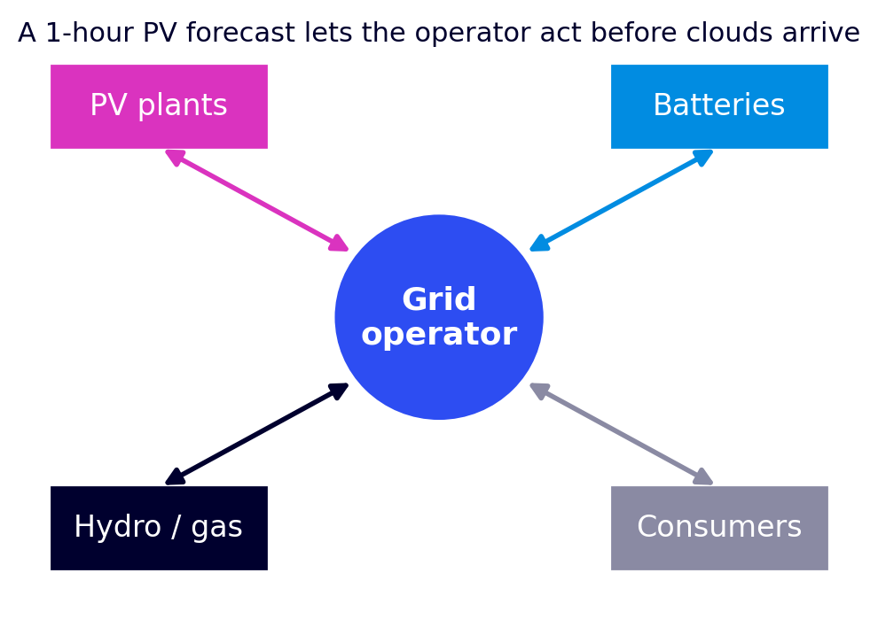
Irradiance is a power (W/m²); irradiation is an energy (Wh/m²). Hourly irradiation in Wh/m² equals the mean irradiance of that hour in W/m². Météo-France files give J/cm²: 1 J/cm² = 2.78 Wh/m², so Wh/m² = J/cm² / 0.36.
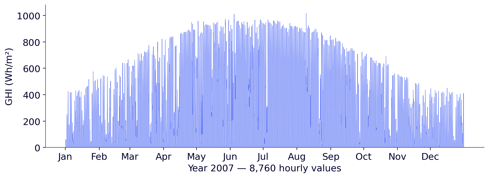
Ten years are split chronologically: 1998–2005 to learn, 2006 to tune, 2007 to test, once, on data never seen.
2. Remove the solar cycle: the clear-sky index
Raw GHI is not stationary: its mean depends on the hour and the month. A clear-sky model gives the irradiance without clouds; the course uses Solis (Ineichen, 2008), whose clear-sky error at Ajaccio is about 32 Wh/m². The clear-sky index is then taken as a difference:
CSI(t) = GHI(t) − GHIcs(t) (≈ 0 under clear sky, 0 at night, negative under clouds)
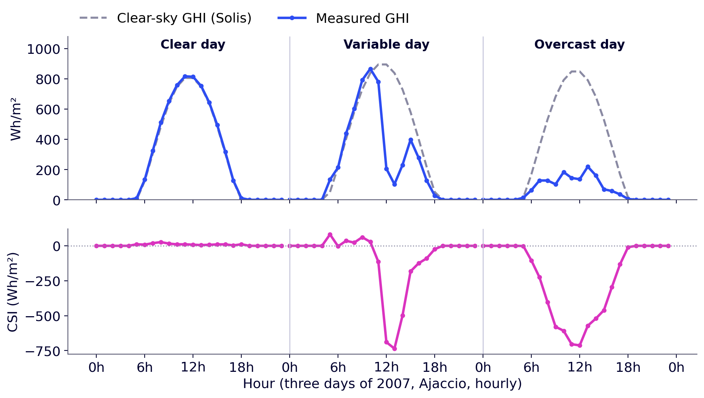
Why a difference rather than the usual ratio GHI / GHIcs? The ratio is 0/0 at night and explodes near sunrise and sunset, so it requires filtering on solar elevation (for example above 10°). The difference works day and night with no filter. Its monthly mean stays between −105 and −43 Wh/m², against 163 to 521 Wh/m² for raw GHI: approximately stationary. It is then centred: y(t) = CSI(t) − μ, with μ ≈ −33 Wh/m².
3. How variable, how forecastable? sCV and F
The stochastic coefficient of variation (sCV) measures how far GHI departs from clear sky at a site; it does not depend on the horizon. Forecastability F adds the memory of clouds: F(h) = 1 − sCV · (1 − ρmax(h)), where ρmax(h) is the strongest remaining correlation of the clear-sky gap (Voyant et al., Renewable Energy 2026, doi:10.1016/j.renene.2025.123913).
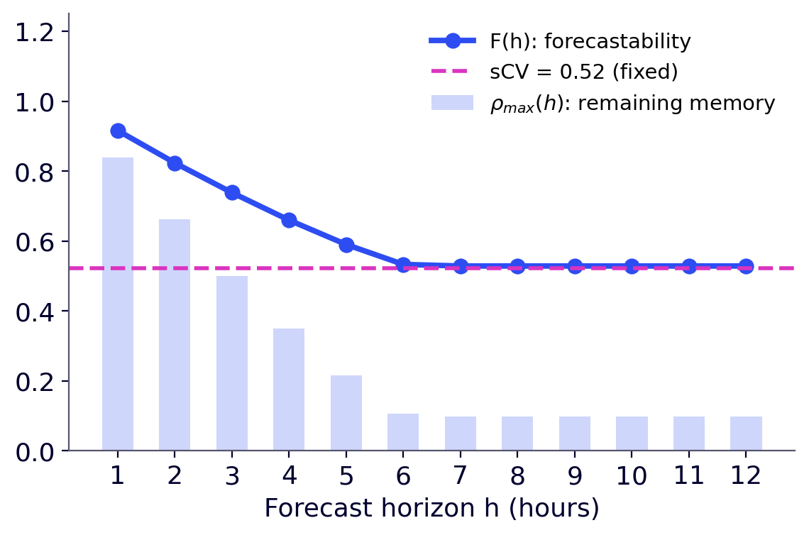
4. A first model, with numbers: AR(1)
y(t+1) = w · y(t) + ε(t+1), so the forecast h hours ahead is ŷ(t+h) = wh · y(t). At Ajaccio, w ≈ 0.84. A cloud gives CSI = −300 Wh/m², so y = −267. One hour later: 0.84 × (−267) = −224, i.e. a forecast CSI of −257 Wh/m², then −221 and −191 at 2 h and 3 h: the forecast returns towards the mean.
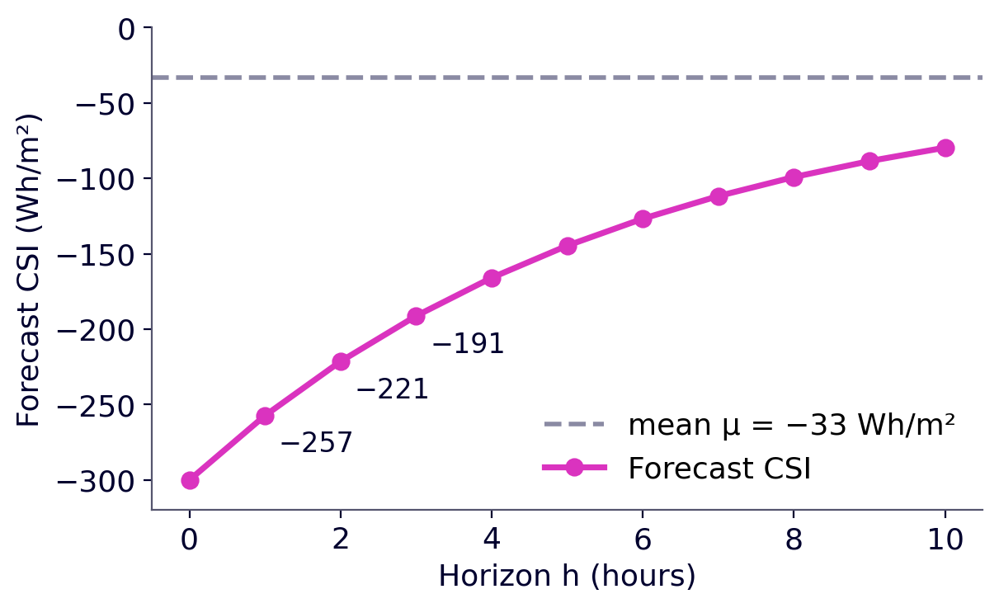
5. AR(p) is a linear regression: least squares
With p lags, y = X w + ε, where each row of X holds the p previous values. Example with p = 2 and five centred values (−10, −25, −240, −180, −30): the rows are (−25, −10 → −240), (−240, −25 → −180), (−180, −240 → −30). The least-squares solution is exact, in one step: ŵ = (XᵀX)⁻¹ Xᵀy. At Ajaccio, AR(2) gives ŵ = (0.97, −0.15), computed in 6 ms on about 70,000 rows: the last value weighs by far the most.
How many lags? The PACF suggests p ≈ 2 (PACF(1) = 0.84, PACF(2) = −0.15), but with 70,000 points almost everything is “significant”. The wrapper approach trains AR(p) for p = 1…12 and measures the validation error:
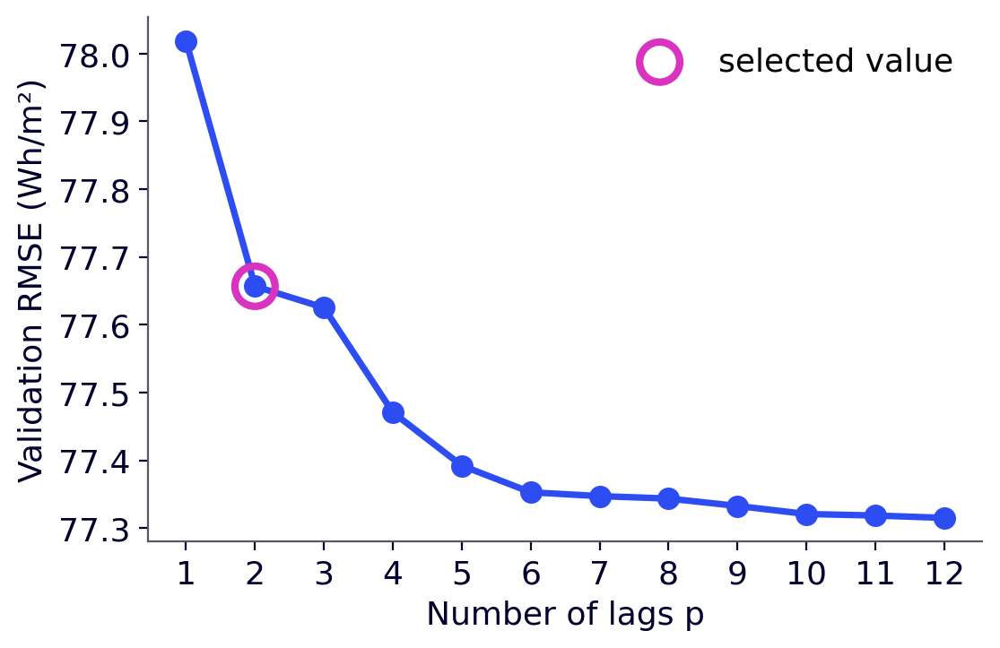
6. Always compare with a reference
A model that does not beat a simple reference brings nothing. Three references: simple persistence GHI(t+1) = GHI(t) (ignores the Sun's course); clear sky GHI(t+1) = GHIcs(t+1) (ignores clouds); smart persistence GHI(t+1) = GHI(t) − GHIcs(t) + GHIcs(t+1) (keeps the gap to clear sky; an AR(1) with w = 1). Two rules for every model: forecast 0 when the Sun is below the horizon, and replace negative forecasts by 0.
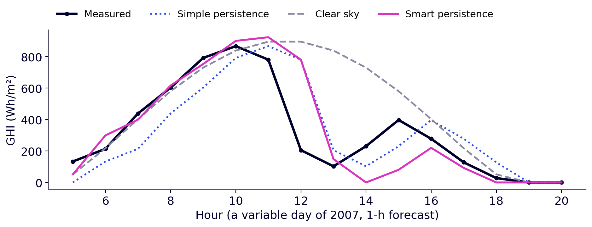
Errors: nMBE (bias, should stay below 1 % in magnitude), MAE, RMSE, nRMSE = RMSE / mean GHI. The skill score SS = 1 − RMSE / RMSE(smart persistence) compares with smart persistence; the NICEᵏ metrics compare with simple persistence on three error norms (Voyant et al., 2025, doi:10.1016/j.seta.2025.104588).
| Model (test 2007, 1 h) | RMSE day (W/m²) | nRMSE day | nRMSE day + night | SS | NICEΣ |
|---|---|---|---|---|---|
| Simple persistence | 135 | 36.4 % | 51.5 % | −0.66 | 1.00 |
| Clear sky | 148 | 39.9 % | 56.4 % | −0.82 | 1.06 |
| Smart persistence | 82 | 22.0 % | 31.0 % | 0.00 | 0.59 |
| AR(2) | 79 | 21.3 % | 30.1 % | +0.03 | 0.58 |
| ELM (L = 50, best draw) | 76 | 20.5 % | 28.9 % | +0.07 | 0.55 |
Smart persistence divides the RMSE of simple persistence by 1.7; AR(2) gains 3 % on it, the ELM 7 %. Daytime: 4,380 hours, mean GHI 372 W/m². Day + night: 8,759 hours, mean 186 W/m².
Day only or day + night? Adding night hours lowers the RMSE of AR(2) from 79 to 56 W/m² (everyone is right at night) but halves the mean (372 → 186), so the nRMSE rises from 21 % to 30 %. The ranking does not change; the numbers do. Always say which hours you used.
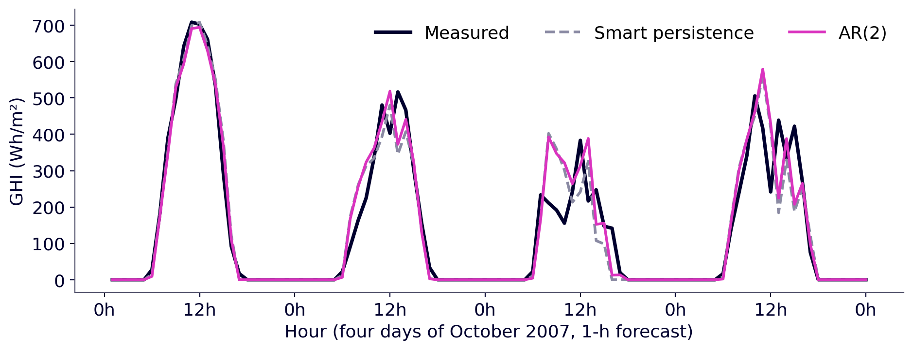
7. Extreme Learning Machine: nonlinear, still least squares
An ELM is a one-hidden-layer network whose input weights and biases are drawn at random and frozen; only the output weights are learnt, by (ridge) least squares: H = g(X Win + b), β = (HᵀH + αI)⁻¹ Hᵀy (Huang et al., 2006). Same equation as AR, other columns. At Ajaccio, L = 50 neurons is enough (validation RMSE 85.2 at L = 5, 75.9 at L = 50, no gain beyond), and 20 random draws give a test nRMSE between 20.37 and 20.51 %.
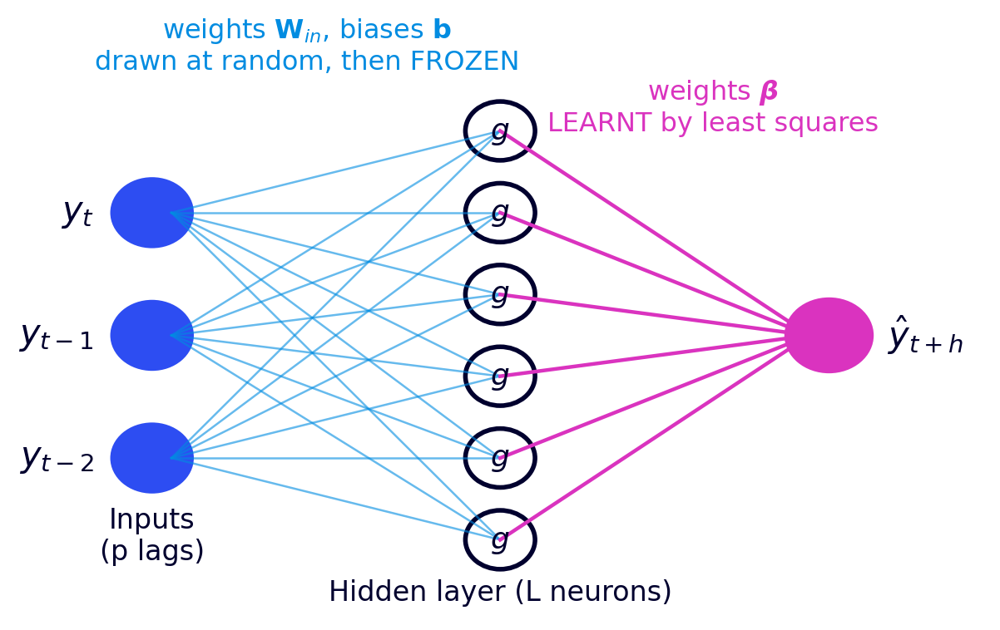
Stationarize or give the time? A linear AR needs the clear-sky index; an ELM given sin/cos encodings of hour and day can learn the solar cycle from raw GHI (Voyant et al., Solar Energy 2025, doi:10.1016/j.solener.2025.113490).
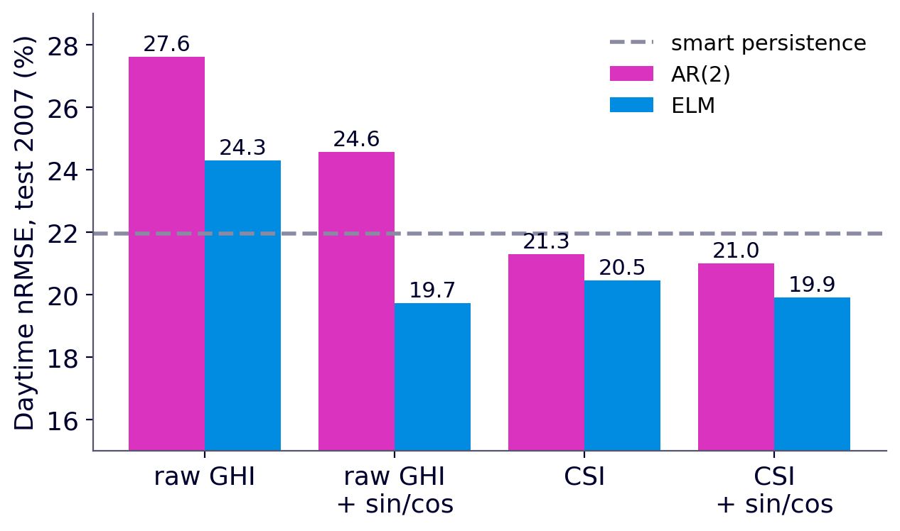
8. Online learning and frugality
With a sliding window, the model is re-estimated every hour on the last W hours (11 µs per update for AR, 38 µs for the ELM). AR(2) stays at 21.3–21.5 % even with one month of data; the ELM degrades to 25.6 % with one month: the more parameters, the more data a model needs.
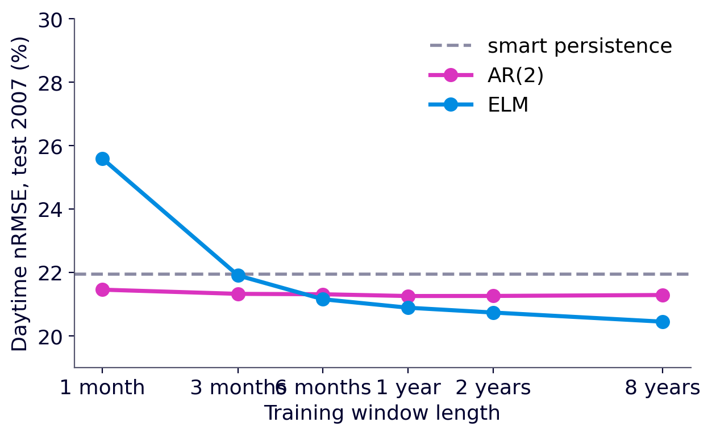
| Model | Learnt coefficients | Training cost | Data needed | nRMSE day (test) |
|---|---|---|---|---|
| Smart persistence | 0 | none | 1 hour | 22.0 % |
| AR(2) | 2 | 6 ms | 1 month is enough | 21.3 % |
| ELM (L = 50) | 51 (+150 random) | 58 ms per draw | several years | 20.5 % |
| AR, 1-month sliding window | 2 | 11 µs per hour | 720 hours | 21.5 % |
Timings on a laptop; only orders of magnitude matter. The right question is not “which model is best?” but “does the gain justify the cost?” in computation, data, maintenance and monitoring. See also the PV_ELM_pred benchmark and persistence and BLEND.
Takeaways
- A forecast is useful only if it beats a reference: always report persistence and smart persistence.
- Remove or encode the solar cycle before learning, and say how (difference, ratio or time encoding).
- Choose model complexity on data you do not test on; state day-only or day + night.
- A small model refreshed often can rival a larger one: frugality is a design choice.
Questions and answers
How do you forecast solar irradiance one hour ahead?
Remove the deterministic solar cycle with a clear-sky model (here Solis), forecast the clear-sky index with a linear autoregressive model fitted by least squares, add the clear-sky irradiance back, and compare the result with smart persistence. On ten years of Ajaccio data, AR(2) reaches a daytime nRMSE of 21.3 % at 1 h, against 22.0 % for smart persistence.
Should the clear-sky index be a difference or a ratio?
Both remove the daily and annual cycle. The difference CSI = GHI − GHIcs (in W/m²) is defined day and night (0 − 0 = 0) and needs no solar-elevation filter. The ratio GHI / GHIcs is unitless and common in the literature, but undefined at night and unstable near sunrise and sunset, so it needs a filter such as solar elevation above 10°.
What is smart persistence in solar forecasting?
Smart (clear-sky) persistence assumes the sky stays the same: it keeps the current gap to the clear-sky irradiance, GHI(t+1) = GHI(t) − GHIcs(t) + GHIcs(t+1). It is an AR(1) with weight 1 and the reference of the skill score. At Ajaccio it divides the RMSE of simple persistence by about 1.7.
Why must forecast errors state day-only or day-and-night hours?
At night every model predicts zero and is right, so adding night hours lowers the RMSE (79 → 56 W/m² for AR(2) at Ajaccio) but halves the mean irradiance (372 → 186 W/m²), which raises the nRMSE (21 % → 30 %). The ranking of models does not change, but the numbers do.
Is an Extreme Learning Machine worth it over a linear AR model?
At Ajaccio, 1 h ahead, an ELM with 50 hidden neurons reaches 20.5 % daytime nRMSE against 21.3 % for AR(2): about 4 points of skill score for roughly 100 times more coefficients, a result that depends on the random draw, and several years of training data. The useful question is whether the gain justifies the cost.
How to cite
Voyant, C. (2026). Solar forecasting basics: a worked example on ten years of Ajaccio data. From the course UE14 “Prévision de la ressource solaire intermittente”, Mines Paris – PSL. https://cyrilvoyant.github.io/teaching/solar-forecasting-basics.html. Licence CC BY 4.0. When you reuse a method, also cite the article behind it.
References
The course rests on articles written with colleagues; authors are listed in the order of each article, with ORCID links when the publisher metadata provides them.
- Cyril Voyant, Gilles Notton, Soteris Kalogirou, Marie-Laure Nivet, Christophe Paoli, Fabrice Motte, Alexis Fouilloy (2017). Machine learning methods for solar radiation forecasting: a review. Renewable Energy 105, 569–582. doi:10.1016/j.renene.2016.12.095
- Cyril Voyant, Gilles Notton, Jean-Laurent Duchaud, Luis Antonio Garcia-Gutierrez, Jamie M. Bright, Dazhi Yang (2022). Benchmarks for solar radiation time series forecasting. Renewable Energy 191, 747–762. doi:10.1016/j.renene.2022.04.065
- Cyril Voyant, Alan Julien, Milan Despotovic, Gilles Notton, Luis Antonio Garcia-Gutierrez, Claudio Francesco Nicolosi, Philippe Blanc, Jamie Bright (2026). Stochastic coefficient of variation: assessing the variability and forecastability of solar irradiance. Renewable Energy 256, 123913. doi:10.1016/j.renene.2025.123913
- Cyril Voyant, Milan Despotovic, Gilles Notton, Yves-Marie Saint-Drenan, Mohammed Asloune, Luis Garcia-Gutierrez (2025). On the importance of clearsky model in short-term solar radiation forecasting. Solar Energy 289, 113490. doi:10.1016/j.solener.2025.113490
- Cyril Voyant, Milan Despotovic, Luis Garcia-Gutierrez, Rodrigo Amaro e Silva, Philippe Lauret, Ted Soubdhan, Nadjem Bailek (2025). NICEᵏ metrics: unified and multidimensional framework for evaluating deterministic solar forecasting accuracy. Sustainable Energy Technologies and Assessments 81, 104588. doi:10.1016/j.seta.2025.104588
- Ineichen P. (2008). A broadband simplified version of the Solis clear sky model. Solar Energy 82(8), 758–762. doi:10.1016/j.solener.2008.02.009
- Huang G.-B., Zhu Q.-Y., Siew C.-K. (2006). Extreme learning machine: theory and applications. Neurocomputing 70, 489–501. doi:10.1016/j.neucom.2005.12.126
- Hyndman R. J., Athanasopoulos G. (2021). Forecasting: Principles and Practice, 3rd ed. OTexts.
Data: Météo-France, Ajaccio station. All figures drawn by the author from these data. Course page (French, slides for students): Forecasting the intermittent solar resource.